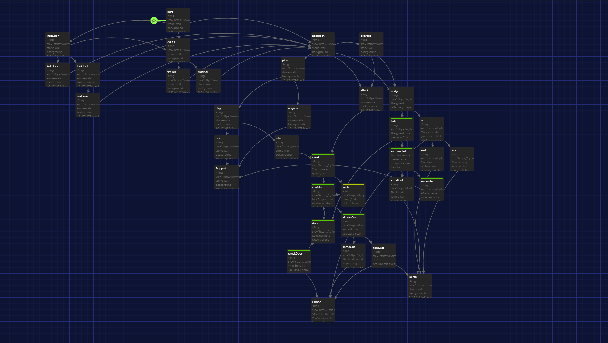
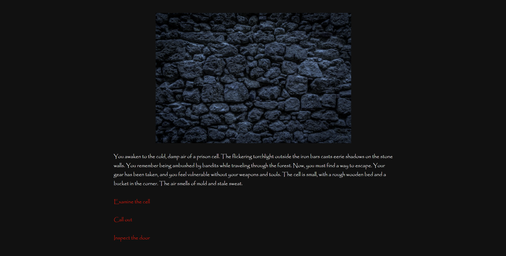
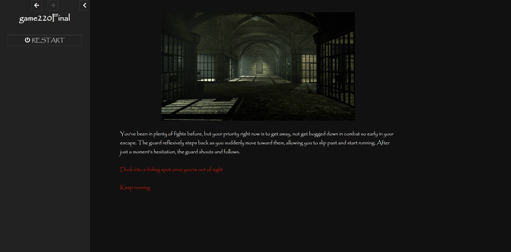
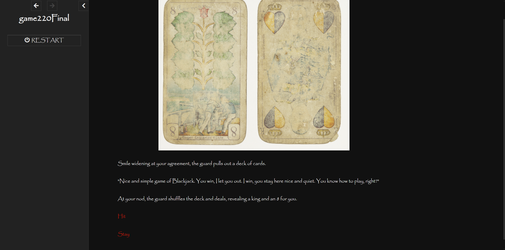

Storyboarder and HTML and JavaScript Programmer for Jail Break
GAME 220, Penn State University
Project Overview
This text-based adventure game is the final project I and two others did for GAME 220. It is quite simple with some branching paths that converge on a few different endings. The game is made in Twine and the player is tasked with reaching the end of the game without dying or returning to jail.
My Role on The Team and Tools Used
My key role was to program the HTML and JavaScript for the game along with script pathways the player can take in the adventure. The tools used for this project were Twine, Google Docs, and Discord. The team used Google Docs to primarily document what we wanted to add into the adventure and also to create our manual guide of how to play the game. Discord was used to communicate between creators and Twine is the software we used to develop the game.
Design Challenges
The design challenge I was meant to solve was how the game would visually look and also create some of the branching pathways that the player can take. I needed to make sure that the progression of the level is cohesive and does not confusing to the player of how the sequence of events unfolded. I also needed to make sure the visuals were not difficult to read and understand. This was one of the earlier points in time where I was learning how HTML and JavaScript worked.
Production Process and Work Samples
The early work process was mostly drafted through spit balling story and interactivity ideas amongst the three of us. We made a google document and listed some of what we agreed on would be the topic, genre, and goal of the players for the game. We had a few ideas float around such as a horror game or Stanley Parable sort of game. Eventually, we settled on a medieval fantasy story of an adventurer who was jailed and needed to escape. The team gradually put together a basic idea of the branching paths and went from there. The choices were mostly discussed over a Discord chat and not thoroughly documented. Below in figure 1 is an image of one of the earlier layouts we had for the player with a decent amount of different paths. However, in hind sight, we probably should have organized these links and scenes into a more cohesive order to avoid confusion amongst the team in regards to what connects to what.

During my time of trying to create the visuals for the game, I went through a couple of ideas. I first wanted to make the background a sort of medieval times piece of paper and make the text look like cursive ink had been written like a story book. I then realized that not only was the background image for such an idea not rendering very well but it didn't cover the full screen and I, at the time, could not figure out how to bring the text to be in front of the image. I also realized that having cursive writing for the text could be hard to read for some players. Another thing I tried was having the background be a dark stone wall to simulate the environment the player is in. This also did not work as it was hard to make the text readable over that kind of a background. Eventually, I settled on just having an above image depicting the scene and then text below. There would then be interactable text being highlighted in a bright red below the descriptive text. Something else I tried to add was music and sound effects to the game but I was unable to figure that out either until after the project was done.
Final Design of Jail Break
Key Notes:
- Shown below are a few of the final designs we made for the project
- In the final design we added several paths that the player could take to reach a few different endings
- We also added in a feature of being able to take keys and other items that can be taken between scenes to help in other locations
- This meant that the user could find an item of interest and then a new option for them would appear that they did not have before
- We also created a final manual for the game that walked the player through the entire game on how to play and how to beat the game
- The story is not particularly complicated
- We also added a restart feature in case the player wants to try a different path or gets stuck and wants to start from the beginning
- Some new scenes were added in the final design that added a bit more variety and options for the player as the amount we had at the halfway point was very lackluster in terms of quantity and quality
- We added some endings that also put you back where you started after being captured again



What Worked? What Did Not Work? What Can Be Improved?
What Worked:
- Team communication was stellar for this project
- All teammates frequently checked in to ensure work was running smoothly and know who was working on what
- Work was well distributed and matched to each members strengths
- Twine is a very simple software to work with and easy to pick up and learn
- The project itself was not particularly complicated to meet the requirements of
- We kept the idea simple so as to not get lost in adding too much to the game or overcomplicating the development process
What Did Not Work:
- The game is quite boring
- The story is not terribly interesting and some choices may feel unclear to the player
- Puzzles were dead pan simple and did not challenge the player to think outside the box
- The visuals of the game are quite lackluster
- The idea for the game is somewhat uninspired
- There was some confusion at some points as to what the professor was looking for and what they weren’t
- We had a very hard time trying to come up with a compelling story to tell and have the player walk through
What Would I Improve:
- Possibly revamp the story to make it more interesting and have the player want to explore more
- Add more possible choices like more keys/items of interest to find
- Add more complicated puzzles
- Revamp the visuals to give a better feel for the game’s tone and environment
- Add some ambient background music to add to the emotions the game is trying to convey
- Maybe add more menu options than just a restart button such as an option to change text size to accommodate players who may have poor eyesight
- The game does not resize well if the screen is certain dimensions
User Feedback
- The professor did not provide much critique for the project but I had a few family members and friends try the game
- The game is not very engaging
- A few instances players were lost on where to go
- Some players got to the end and won but didn’t understand how or why they won
- Many said the game was very short
- Some asked “Who are we exactly? What did our character do to be here?”
- No comments were made on visuals other than the text can be hard to read for some
- General praises for the manual guide that comes with the game
- Some were not a fan of the ai generated art work for the front page of the manual
- Players liked the restart button and back button for incase they made a mistake